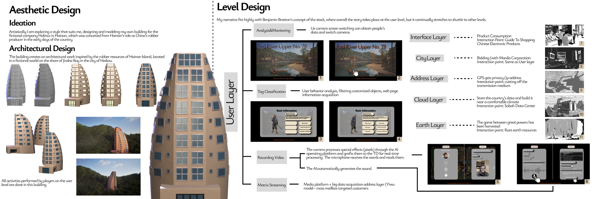
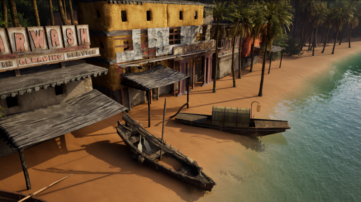

虚拟场景与交互 / 2024
情迷海南岛
Remote Fantasy
以思辨设计连接研究、虚拟场景和交互形式，将关于数字媒介的叙事转化为可见的空间。
- 我的角色
- 项目研究、视觉与交互制作
- 项目产出
- 图像、虚拟场景与交互实验
- 使用工具
- 三维建模、Unreal Engine、Arduino

01 / CONTEXT建立一个虚构世界
项目以海南岛封关政策为思辨起点，受到本杰明·布拉顿“堆叠理论”的启发，围绕数字时代的主权与地缘关系展开研究，并以越南为叙事线索。
我将研究中的抽象关系放进虚构场景，通过建筑、空间和交互层级组织内容。作品是“数字媒介本体”系列的软件层分章，以多种媒介共同构成叙事。
02 / PROCESS把概念转成空间
研究与叙事设定
整理政策背景、历史材料与理论线索，建立虚构世界中的人物关系、地点与故事框架。
建筑与场景制作
进行三维建模与场景构建，将建筑形态、海岸景观和叙事线索组合成连续的视觉环境。
交互形式探索
结合Unreal Engine与Arduino实验，把观看、空间与互动安排到同一项目中，探索叙事如何随参与而展开。

03 / VISUALS场景与视觉产出

项目留下了研究图像、场景画面、建筑模型与交互实验记录。它体现了我将概念研究继续推进到视觉制作、并在不同工具之间组织内容的实践。
查看完整项目档案 ↗